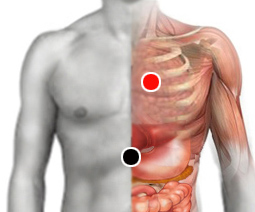

Coronarias, obstrucción
Antes de continuar vea la nota sobre el uso de esta Guía.
Paro cardiaco
El paro cardíaco es la pérdida repentina de la función cardíaca, la respiración y la consciencia. Este trastorno generalmente es el resultado de una alteración eléctrica en el corazón que interrumpe sus latidos y el bombeo de la sangre a todo el cuerpo.
El paro cardíaco es distinto de un ataque cardíaco. Si no se trata de inmediato, el paro cardíaco puede llevar a la muerte. Con una atención médica adecuada y rápida, se puede sobrevivir. Realizar reanimación cardiopulmonar (RCP), o utilizar un desfibrilador puede mejorar la probabilidad de sobrevivir.
Síntomas:
Generalmente la persona sufre un colapso súbito (demayo, pérdida de conocimiento), revise si tiene pulso y respira. Si no presenta estos signos proceda con la reanimación cardiorespiratoria y solicite los servicios de emergencia.
Ocasionalmente la persona puede presentar debilidad, sofocación, palpitaciones, sudoración o molestias en el pecho momentos antes de sufrir un paro cardiaco. Un choque o descarga eléctrica también puede producir el paro cardíaco.
Infarto al miocardio:
Las arterias coronarias son las responsables de irrigar sangre al músculo cardiáco, pueden obstruirse principalmente por el exceso de colesterol en la sangre, lo cual puede provocar un Infarto al miocardio; es decir, que una parte del músculo cardiaco muere por falta de oxígeno. El infarto puede ser grave o mortal según la cantidad de tejido dañado. El Ataque al corazón puede provocar un paro cardíaco. El Infarto agudo al miocardio es un padecimiento bastante común causando miles de hospitalizaciones al año, cobrando la vida de un 10% de los pacientes internados, y una de las principales causas de muerte en adultos de mediana edad.
Pares para desbloquear coronarias
cardias - coronarias
coronarias - pulmón
índice - índice
radio - radio

Síntomas:
Los síntomas de un infarto al miocardio suelen ser: dolor en el pecho que se extiende al brazo izquierdo, cuello y espalda; puede ir acompañado de sudoración fría, nauseas y agitación. Acudir al servicio de emergencia en forma inmediata, se pueden aplicar los pares mientras el paciente llega a ser atendido por los servicios médicos.
Aplicar estos pares para recuperar el flujo sanguíneo en la zona. Estas medidas no sustituyen la consulta al cardiólogo. Un cambio en la dieta y llevar un buen régimen de ejercicio pueden ser excelentes medidas preventivas.
Causas:
Los principales factores causantes son: